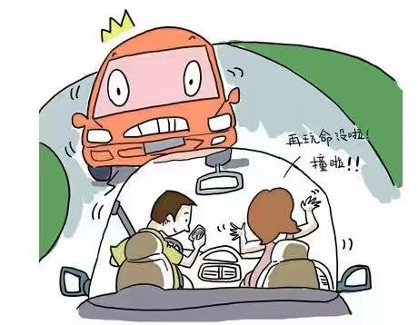

Of all adult drivers who own a cell phone, 10 percent say they talk on the phone while driving “all the time,” 62 percent say “sometimes,” and 28 percent say “never.”
Sending and receiving text messages while driving is relatively rare: only 5 percent of all drivers who have a cell phone report that they do so “all the time,” 22 percent report “sometimes,” and 74 percent report “never.”
An Australian study showed that cell phone use while driving was associated with slightly more than a fourfold increase in crash risk (odds ratio 4:1).
A review of 84 studies of the impact of cell phone use on driving performance concluded that whereas cell phone use has only a small or moderate impact on driving performance measures such as driving speed, lane position, and various other measures of vehicle control, it significantly slows the driver’s speed of reaction to critical events 0.23 seconds.

Talking on the phone while driving differs depending on the age of the driver. Of the Echo Boomers (age 18–32), 83 percent report that they at least sometimes talk on the phone while driving. Of the Gen X (age 33–44), 85 percent. Of the Baby Boomers (age 45–63), 70 percent. Of the Matures (64+), 42 percent.
In 1990, there were 5 million wireless subscribers. Today, there are more than 270 million wireless subscribers in the United States.
Of those drivers who use cell phones while driving, most think that doing so is dangerous (26 percent “very dangerous,” 24 percent “dangerous,” 33 percent “somewhat dangerous,” 16 percent “slightly dangerous”). Only 2 percent think it is “not dangerous at all.”